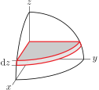
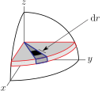
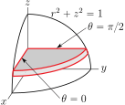
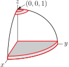
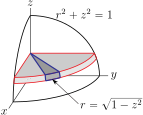
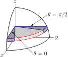
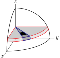
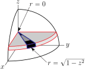
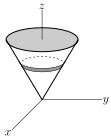
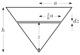

Section 3.6 Triple Integrals in Cylindrical Coordinates
Many problems possess natural symmetries. We can make our work easier by using coordinate systems, like polar coordinates, that are tailored to those symmetries. We will look at two more such coordinate systems — cylindrical and spherical coordinates.
Subsection 3.6.1 Cylindrical Coordinates
In the event that we wish to compute, for example, the mass of an object that is invariant under rotations about the \(z\)-axis 1 , it is advantageous to use a natural generalization of polar coordinates to three dimensions. The coordinate system is called cylindrical coordinates.
Definition 3.6.1.
Cylindrical coordinates are denoted 2 \(r\text{,}\) \(\theta\) and \(z\) and are defined by
That is, \(r\) and \(\theta\) are the usual polar coordinates and \(z\) is the usual \(z\text{.}\)
The Cartesian and cylindrical coordinates are related by 3
Equation 3.6.2.
Here are sketches of surfaces of constant \(r\text{,}\) constant \(\theta\text{,}\) and constant \(z\text{.}\)
Subsection 3.6.2 The Volume Element in Cylindrical Coordinates
Before we can start integrating using these coordinates we need to determine the volume element. Recall that before integrating in polar coordinates, we had to establish that \(\dee{A}=r\,\dee{r}\,\dee{\theta}\text{.}\) In the arguments that follow we establish that \(\dee{V} =r\,\dee{r}\,\dee{\theta}\,\dee{z}\text{.}\)
If we cut up a solid by
-
first slicing it into horizontal plates of thickness \(\dee{z}\) by using planes of constant \(z\text{,}\)
 -
and then subdividing the plates into wedges using surfaces of constant \(\theta\text{,}\) say with the difference between successive \(\theta\)'s being \(\dee{\theta}\text{,}\)
-
and then subdividing the wedges into approximate cubes using surfaces of constant \(r\text{,}\) say with the difference between successive \(r\)'s being \(\dee{r}\text{,}\)

we end up with approximate cubes that look like
- When we introduced slices using surfaces of constant \(r\text{,}\) the difference between the successive \(r\)'s was \(\dee{r}\text{,}\) so the indicated edge of the cube has length \(\dee{r}\text{.}\)
- When we introduced slices using surfaces of constant \(z\text{,}\) the difference between the successive \(z\)'s was \(\dee{z}\text{,}\) so the vertical edges of the cube have length \(\dee{z}\text{.}\)
- When we introduced slices using surfaces of constant \(\theta\text{,}\) the difference between the successive \(\theta\)'s was \(\dee{\theta}\text{,}\) so the remaining edges of the cube are circular arcs of radius essentially 4 \(r\) that subtend an angle \(\theta\text{,}\) and so have length \(r\,\dee{\theta}\text{.}\) See the derivation of equation 3.2.5.
So the volume of the approximate cube in cylindrical coordinates is (essentially 5 )
Equation 3.6.3.
Subsection 3.6.3 Sample Integrals in Cylindrical Coordinates
Now we can use 3.6.3 to handle a variant of Example 3.5.1 in which the density is invariant under rotations around the \(z\)-axis. Cylindrical coordinates are tuned to provide easier integrals to evaluate when the integrand is invariant under rotations about the \(z\)-axis, or when the domain of integration is cylindrical.
Example 3.6.4.
Find the mass of the solid body consisting of the inside of the sphere \(x^2+y^2+z^2=1\) if the density is \(\rho(x,y,z) = x^2+y^2\text{.}\)
Before we get started, note that \(x^2+y^2\) is the square of the distance from \((x,y,z)\) to the \(z\)-axis. Consequently both the integrand, \(x^2+y^2\text{,}\) and the domain of integration, \(x^2+y^2+z^2\le 1\text{,}\) and hence our solid, are invariant under rotations about the \(z\)-axis 6 . That makes this integral a good candidate for cylindrical coordinates.
Again, by symmetry the total mass of the sphere will be eight times the mass in the first octant. We shall cut the first octant part of the sphere into tiny pieces using cylindrical coordinates. That is, we shall cut it up using planes of constant \(z\text{,}\) planes of constant \(\theta\text{,}\) and surfaces of constant \(r\text{.}\)
-
First slice the (the first octant part of the) sphere into horizontal plates by inserting many planes of constant \(z\text{,}\) with the various values of \(z\) differing by \(\dee{z}\text{.}\) The figure on the left below shows the part of one plate in the first octant outlined in red. Each plate
- has thickness \(\dee{z}\text{,}\)
- has \(z\) essentially constant on the plate, and
- has \((x,y)\) running over \(x\ge 0\text{,}\) \(y\ge 0\text{,}\) \(x^2+y^2\le 1-z^2\text{.}\) In cylindrical coordinates, \(r\) runs from \(0\) to \(\sqrt{1-z^2}\) and \(\theta\) runs from \(0\) to \(\frac{\pi}{2}\text{.}\)
- The bottom plate has, essentially, \(z=0\) and the top plate has, essentially, \(z=1\text{.}\) See the figure on the right below.
So far, this looks just like what we did in Example 3.5.1.
-
Concentrate on any one plate. Subdivide it into wedges by inserting many planes of constant \(\theta\text{,}\) with the various values of \(\theta\) differing by \(\dee{\theta}\text{.}\) The figure on the left below shows one such wedge outlined in blue. Each wedge
- has \(z\) and \(\theta\) essentially constant on the wedge, and
- has \(r\) running over \(0\le r\le \sqrt{1-z^2}\text{.}\)
- The leftmost wedge has, essentially, \(\theta=0\) and the rightmost wedge has, essentially, \(\theta=\frac{\pi}{2}\text{.}\) See the figure on the right below.
 -
Concentrate on any one wedge. Subdivide it into tiny approximate cubes by inserting many surfaces of constant \(r\text{,}\) with the various values of \(r\) differing by \(\dee{r}\text{.}\) The figure on the left below shows the top of one approximate cube in black. Each cube
- has volume \(r\,\dee{r}\,\dee{\theta}\,\dee{z}\text{,}\) by 3.6.3, and
- has \(r\text{,}\) \(\theta\) and \(z\) all essentially constant on the cube.
- The first cube has, essentially, \(r=0\) and the last cube has, essentially, \(r=\sqrt{1-z^2}\text{.}\) See the figure on the right below.

Now we can build up the mass.
-
Concentrate on one approximate cube. Let's say that it contains the point with cylindrical coordinates \(r\text{,}\) \(\theta\) and \(z\text{.}\)
- The cube has volume essentially \(\dee{V}=r\,\dee{r}\,\dee{\theta}\,\dee{z}\) and
- essentially has density \(\rho(x,y,z)=\rho(r\cos\theta,r\sin\theta,z) = r^2\) and so
- essentially has mass \(r^3\,\dee{r}\,\dee{\theta}\,\dee{z}\text{.}\) (See how nice the right coordinate system can be!)
- To get the mass any one wedge, say the wedge whose \(\theta\) coordinate runs from \(\theta\) to \(\theta+\dee{\theta}\text{,}\) we just add up the masses of the approximate cubes in that wedge, by integrating \(r\) from its smallest value on the wedge, namely \(0\text{,}\) to its largest value on the wedge, namely \(\sqrt{1-z^2}\text{.}\) The mass of the wedge is thus\begin{gather*} \dee{\theta}\,\dee{z} \int_0^{\sqrt{1-z^2}} \dee{r}\,r^3 \end{gather*}
- To get the mass of any one plate, say the plate whose \(z\) coordinate runs from \(z\) to \(z+\dee{z}\text{,}\) we just add up the masses of the wedges in that plate, by integrating \(\theta\) from its smallest value on the plate, namely \(0\text{,}\) to its largest value on the plate, namely \(\frac{\pi}{2}\text{.}\) The mass of the plate is thus\begin{gather*} \dee{z}\int_0^{\pi/2}\dee{\theta}\int_0^{\sqrt{1-z^2}} \dee{r}\,r^3 \end{gather*}
- To get the mass of the part of the sphere in the first octant, we just add up the masses of the plates that it contains, by integrating \(z\) from its smallest value in the octant, namely \(0\text{,}\) to its largest value on the sphere, namely \(1\text{.}\) The mass in the first octant is thus\begin{align*} \int_0^1\dee{z}\int_0^{\pi/2}\dee{\theta}\int_0^{\sqrt{1-z^2}} \dee{r}\,r^3 &= \frac{1}{4}\int_0^1\dee{z}\int_0^{\pi/2}\dee{\theta}\ {(1-z^2)}^2\\ &= \frac{\pi}{8}\int_0^1\dee{z}\ {(1-z^2)}^2\\ &=\frac{\pi}{8}\int_0^1\dee{z}\ (1-2z^2+z^4)\\ &= \frac{\pi}{8}\overbrace{\left[1-\frac{2}{3}+\frac{1}{5}\right]}^{8/15}\\ &=\frac{1}{15}\pi \end{align*}
- So the mass of the total (eight octant) sphere is \(8\times\frac{1}{15}\pi=\frac{8}{15}\pi\text{.}\)
Just by way of comparison, here is the integral in Cartesian coordinates that gives the mass in the first octant. (We found the limits of integration in Example 3.5.1.)
In the next example, we compute the moment of inertia of a right circular cone. The Definition 3.3.13 of the moment of inertia was restricted to two dimensions. However, as was pointed out at the time, the same analysis extends naturally to the definition
Equation 3.6.5.
of the moment of inertia of a solid \(\cV\) in three dimensions. Here
- \(\rho(x,y,z)\) is the mass density of the solid at the point \((x,y,z)\) and
- \(D(x,y,z)\) is the distance from \((x,y,z)\) to the axis of rotation.
Example 3.6.6.
Find the moment of inertia of a right circular cone
- of radius \(a\text{,}\)
- of height \(h\text{,}\) and
- of constant density with mass \(M\)
about an axis through the vertex (i.e. the tip of the cone) and parallel to the base.
Here is a sketch of the cone.
Let's pick a coordinate system with
- the vertex at the origin,
- the cone symmetric about the \(z\)-axis and
- the axis of rotation being the \(y\)-axis.
and call the cone \(\cV\text{.}\)
We shall use 3.6.5 to find the moment of inertia. In the current problem, the axis of rotation is the \(y\)-axis. The point on the \(y\)-axis that is closest to \((x,y,z)\) is \((0,y,0)\) so that the distance from \((x,y,z)\) to the axis is just
Our solid has constant density and mass \(M\text{,}\) so
The formula
for the volume of a cone was derived in Example 1.6.1 of the CLP-2 text and in Appendix B.5.2 of the CLP-1 text. However because of the similarity between the integral \(\text{Volume}(\cV)=\tripInt_\cV \dee{x}\,\dee{y}\,\dee{z}\) and the integral \(\tripInt_\cV (x^2+z^2)\ \dee{x}\,\dee{y}\,\dee{z}\text{,}\) that we need for our computation of \(I_\cA\text{,}\) it is easy to rederive the volume formula and we shall do so.
We'll evaluate both of the integrals above using cylindrical coordinates.
-
Start by slicing the cone into horizontal plates by inserting many planes of constant \(z\text{,}\) with the various values of \(z\) differing by \(\dee{z}\text{.}\)
Each plate
- is a circular disk of thickness \(\dee{z}\text{.}\)
-
By similar triangles, as in the figure on the right below, the disk at height \(z\) has radius \(R\) obeying
\begin{equation*} \frac{R}{z} = \frac{a}{h} \implies R =\frac{a}{h}z \end{equation*} - So the disk at height \(z\) has the cylindrical coordinates \(r\) running from \(0\) to \(\frac{a}{h}z\) and \(\theta\) running from \(0\) to \(2\pi\text{.}\)
- The bottom plate has, essentially, \(z=0\) and the top plate has, essentially, \(z=h\text{.}\)
-
Now concentrate on any one plate. Subdivide it into wedges by inserting many planes of constant \(\theta\text{,}\) with the various values of \(\theta\) differing by \(\dee{\theta}\text{.}\)
- The first wedge has, essentially \(\theta=0\) and the last wedge has, essentially, \(\theta=2\pi\text{.}\)
-
Concentrate on any one wedge. Subdivide it into tiny approximate cubes 7 by inserting many surfaces of constant \(r\text{,}\) with the various values of \(r\) differing by \(\dee{r}\text{.}\) Each cube
- has volume \(r\,\dee{r}\,\dee{\theta}\,\dee{z}\text{,}\) by 3.6.3.
- The first cube has, essentially, \(r=0\) and the last cube has, essentially, \(r=\frac{a}{h}z\text{.}\)
So the two integrals of interest are
as expected, and
Putting everything together, the moment of inertia is
Exercises 3.6.4 Exercises
Exercises — Stage 1
1.
Use \((r,\theta,z)\) to denote cylindrical coordinates.
- Draw \(r=0\text{.}\)
- Draw \(r=1\text{.}\)
- Draw \(\theta=0\text{.}\)
- Draw \(\theta=\frac{\pi}{4}\text{.}\)
2.
Sketch the points with the specified cylindrical coordinates.
- \(r=1\text{,}\) \(\theta=0\text{,}\) \(z=0\)
- \(r=1\text{,}\) \(\theta=\frac{\pi}{4}\text{,}\) \(z=0\)
- \(r=1\text{,}\) \(\theta=\frac{\pi}{2}\text{,}\) \(z=0\)
- \(r=0\text{,}\) \(\theta=\pi\text{,}\) \(z=1\)
- \(r=1\text{,}\) \(\theta=\frac{\pi}{4}\text{,}\) \(z=1\)
3.
Convert from cylindrical to Cartesian coordinates.
- \(r=1\text{,}\) \(\theta=0\text{,}\) \(z=0\)
- \(r=1\text{,}\) \(\theta=\frac{\pi}{4}\text{,}\) \(z=0\)
- \(r=1\text{,}\) \(\theta=\frac{\pi}{2}\text{,}\) \(z=0\)
- \(r=0\text{,}\) \(\theta=\pi\text{,}\) \(z=1\)
- \(r=1\text{,}\) \(\theta=\frac{\pi}{4}\text{,}\) \(z=1\)
4.
Convert from Cartesian to cylindrical coordinates.
- \(\displaystyle (1,1,2)\)
- \(\displaystyle (-1,-1,2)\)
- \(\displaystyle (-1,\sqrt{3}, 0)\)
- \(\displaystyle (0,0,1)\)
5.
Rewrite the following equations in cylindrical coordinates.
- \(\displaystyle z=2xy\)
- \(\displaystyle x^2+y^2+z^2=1\)
- \(\displaystyle (x-1)^2 + y^2 =1\)
Exercises — Stage 2
6.
Use cylindrical coordinates to evaluate the volumes of each of the following regions.
- Above the \(xy\)--plane, inside the cone \(z=2a-\sqrt{x^2+y^2}\) and inside the cylinder \(x^2+y^2=2ay\text{.}\)
- Above the \(xy\)--plane, under the paraboloid \(z=1-x^2-y^2\) and in the wedge \(-x\le y\le \sqrt{3}x\text{.}\)
- Above the paraboloid \(\ z=x^2+y^2\ \) and below the plane \(\ z=2y\text{.}\)
7. ✳.
Let E be the region bounded between the parabolic surfaces \(z = x^2 + y^2\) and \(z = 2 - x^2 - y^2\) and within the cylinder \(x^2 + y^2 \le 1\text{.}\) Calculate the integral of \(f(x,y,z) = {(x^2 + y^2)}^{3/2}\) over the region \(E\text{.}\)
8. ✳.
Let \(E\) be the region bounded above by the sphere \(x^2 + y^2 + z^2 = 2\) and below by the paraboloid \(z = x^2 + y^2\text{.}\) Find the centroid of \(E\text{.}\)
9. ✳.
Let \(E\) be the smaller of the two solid regions bounded by the surfaces \(z = x^2 + y^2\) and \(x^2 + y^2 + z^2 = 6\text{.}\) Evaluate \(\tripInt_E (x^2+y^2)\ \dee{V}\) .
10. ✳.
Let \(a \gt 0\) be a fixed positive real number. Consider the solid inside both the cylinder \(x^2 + y^2 = ax\) and the sphere \(x^2 + y^2 + z^2 = a^2\text{.}\) Compute its volume.
You may use that \(\int \sin^3(\theta) =\frac{1}{12}\cos(3\theta) -\frac{3}{4}\cos(\theta) +C\)
11. ✳.
Let \(E\) be the solid lying above the surface \(z = y^2\) and below the surface \(z = 4 - x^2\text{.}\) Evaluate
You may use the half angle formulas:
12.
The centre of mass \((\bar x,\bar y, \bar z)\) of a body \(B\) having density \(\rho(x,y,z)\) (units of mass per unit volume) at \((x,y,z)\) is defined to be
where
is the mass of the body. So, for example, \(\bar x\) is the weighted average of \(x\) over the body. Find the centre of mass of the part of the solid ball \(x^2+y^2+z^2\le a^2\) with \(x\ge 0\text{,}\) \(y\ge 0\) and \(z\ge 0\text{,}\) assuming that the density \(\rho\) is constant.
13. ✳.
A sphere of radius \(2{\rm m}\) centred on the origin has variable density \(\frac{5}{\sqrt{3}}(z^2+1)\)kg/\({\rm m}^3\text{.}\) A hole of diameter 1m is drilled through the sphere along the \(z\)--axis.
- Set up a triple integral in cylindrical coordinates giving the mass of the sphere after the hole has been drilled.
- Evaluate this integral.
14. ✳.
Consider the finite solid bounded by the three surfaces: \(z=e^{-x^2-y^2}\text{,}\) \(z=0\) and \(x^2+y^2=4\text{.}\)
- Set up (but do not evaluate) a triple integral in rectangular coordinates that describes the volume of the solid.
- Calculate the volume of the solid using any method.
15. ✳.
Find the volume of the solid which is inside \(x^2 + y^2 = 4\text{,}\) above \(z = 0\) and below \(2z = y\text{.}\)
Exercises — Stage 3
16. ✳.
The density of hydrogen gas in a region of space is given by the formula
- At \((1,0,-1)\text{,}\) in which direction is the density of hydrogen increasing most rapidly?
-
You are in a spacecraft at the origin. Suppose the spacecraft flies in the direction of \(\llt 0,0,1\rgt\text{.}\) It has a disc of radius \(1\text{,}\) centred on the spacecraft and deployed perpendicular to the direction of travel, to catch hydrogen. How much hydrogen has been collected by the time that the spacecraft has traveled a distance \(2\text{?}\)
You may use the fact that \(\int_0^{2\pi}\cos^2\theta\ \dee{\theta} =\pi\text{.}\)
17.
A torus of mass \(M\) is generated by rotating a circle of radius \(a\) about an axis in its plane at distance \(b\) from the centre \((b \gt a)\text{.}\) The torus has constant density. Find the moment of inertia about the axis of rotation. By definition the moment of intertia is \(\tripInt r^2 \dee{m}\) where \(\dee{m}\) is the mass of an infinitesmal piece of the solid and \(r\) is its distance from the axis.